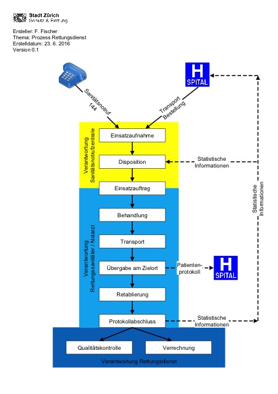

CH EMS (R4)
1.9.0 - Standard for Trial Use
CH EMS (R4)
1.9.0 - Standard for Trial Use
This page is part of the CH EMS (R4) (v1.9.0: STU) based on FHIR R4. . For a full list of available versions, see the Directory of published versions 
Die hier skizzierten Anwendungsfälle (UC = Use Case) beziehen sich auf Beispiele, wie sie heute bei den verschiedenen Akteuren im Schweizer Gesundheitswesen vorkommen, die mit dem vorliegenden Thema zu tun haben. Einige Anwendungsfälle werden erst möglich, wenn durch Import/Export-Mechanismen alle relevanten Informationen interoperabel fliessen können.
Ziel ist einerseits die Bereitstellung von Informationen zum Gesundheitszustand des Patienten in einer menschlich lesbaren Form für die am Behandlungspfad beteiligten Personen. Andererseits sollen durch die elektronische Verarbeitung der Informationen Prozesse in den ICT-Systemen optimiert werden können.
Nachfolgend beschriebene Anwendungsfälle verdeutlichen diese Zusammenhänge im vorliegenden Kontext.
In Abhängigkeit vom Ereignis, das den Rettungseinsatz auslöst, kann der Ablauf im Detail unterschiedlich ausfallen. Wir gehen in diesem Leitfaden jedoch davon aus, dass jeder Einsatz mit einem Auslöser bei der Disposition in einer Notrufzentrale beginnt und mit der Qualitätskontrolle und der Verrechnung abgeschlossen wird. Die Daten, die dabei erhoben werden, sind immer wieder dieselben und Teil einer vereinigten Gesamtmenge aller Möglichkeiten. Die Unterschiede in den Abläufen führen dazu, dass Datengruppen oder einzelne Elemente ausführlich und detailliert, in einfacher Form oder gar nicht erhoben und bearbeitet werden. Im Gegensatz zu einem Papierformular kann ein elektronisches auf solche Unterschiede eingehen, was die Erfassung erheblich vereinfacht. Allerdings ist die Spezifikation dazu nicht Teil dieses Leitfadens.
Die Grafik beschreibt also einen möglichst generischen Ablauf, der sachdienlich ist, Diskussionen im Detail aber vermeidet.
In der Sanitätsnotrufzentrale geht ein Anruf ein. Dieser geht entweder (a) von einem Unfall- oder einer akuten Gesundheitsattacke aus und ist schnellstmöglich mit höchster Priorität auszuführen oder betrifft (b) einen geplanten Transport einer Person mit medizinischen Einschränkungen.
Bei diesem Anruf werden die ersten Daten zur Domäne Einsatz (Einsatz- und Zielort) erhoben und dokumentiert. Beim Zielort sind bei einem Grossereignis Vorbehalte möglich, die aber zwischen dem Start des Teams von der Basis und der Abfahrt vom Einsatzort geklärt werden müssen.
Die Disposition in der Zentrale lässt sich möglichst viele Informationen zu den betroffenen Personen geben. Während das im Fall (a) möglicherweise auf die (Anzahl) Person(en), deren ungefähres Alter und deren Geschlecht beschränkt bleiben muss, können sie im Fall (b) mit dem Auftrag abschliessend erfasst werden.
Aufgrund der verfügbaren Informationen bestimmt die Disposition die nötige Besetzung und Ausrüstung des Einsatzteams, wählt ein verfügbares aus oder organisiert ein solches, durch Umstellungen in den laufenden Einsätzen oder bei Partnerorganisationen.
Damit sind alle Informationen zum Szenario „Einsatz“ bestimmt. Einzig die Statuszeiten müssen noch hergeleitet oder erfasst werden.
Das Einsatzteam erhält den Einsatzauftrag und beginnt mit der Umsetzung. Auf dem Weg zum Einsatzort können die verfügbaren Informationen ausgewertet und ggf. weitere Informationen angefordert werden.
Am Einsatzort wird eine Lagebeurteilung gemacht, es werden:
Alle diese Schritte werden im Rettungsprotokoll festgehalten und dokumentiert.
Während die Daten zur Person und zur Administration bei einem geplanten Einsatz von Beginn an bekannt sind, müssen Sie bei einem Noteinsatz oft am Einsatzort noch einmal ergänzt werden. Dies kann parallel zur Erhebung der Anamnese und Befunde geschehen; im einfachsten Fall verfügt der Patient über einen Ausweis und/oder eine Versicherungskarte.
Sobald der Patient transportfähig und der Zielort (meist Notfallstation mit Aufnahmekapazität) bekannt ist, wird der Transport ausgelöst.
Am Zielort wird der Patient sowie das Rettungsprotokoll übergeben.
Bei einem Notfalleinsatz ist auch zu diesem Zeitpunkt noch nicht garantiert, dass der Patient abschliessend identifiziert werden konnte. Die Aufgabe, dies zu tun und den Fall auch administrativ zum Abschluss zu bringen, liegt dann beim behandelnden Spital.
Das Team kehrt mit dem Fahrzeug auf die Basis zurück, führt die Retablierung durch und schliesst das Protokoll ab. Die Qualitätssicherung und die Abrechnung (gegenüber dem Patienten oder gegenüber dem Zielort) sind nun Aufgabe des Backoffice des Rettungsdienstes.
Prozess Rettungsdienst

Für das Rettungsdienstprotokoll werden 2 Use cases beschrieben:
1. Primäreinsatz mit identifizierbarem Patienten:
Einsatz, in dem der Rettungsdienst den ersten Kontakt mit dem Patienten hat und diesen auf Grund eines Ausweises, auf Grund einer Aussage des Patienten o.Ä. eindeutig identifizieren kann. Häufig handelt es sich hierbei um Notfalleinsätze. Primäreinsätze sind für den Rettungsdienst mehrheitlich nicht planbar.
2. Primäreinsatz mit unbekanntem Patienten:
Einsatz, in dem das Team des Rettungsdienstes bis zum Abschluss des Einsatzes den Patienten nicht identifizieren kann. Gründe dafür können z.B. sein, dass sich die Person nicht äussern kann und keine Ausweise auf sich trägt oder dass im Falle eines Grossereignisses die Identifikation der Verletzen auf dem Schadenplatz mangels Zeit nicht erfolgen konnte.
Beide Use Cases sind frei erfunden. Sie dienen allein der Illustration, wie Angaben, die im Verlauf eines Einsatzes erfahren werden, im Datensatz des CH EMS abgebildet werden. Die Use Cases können deshalb Angaben enthalten, die einsatztaktisch oder medizinisch nicht sinnvoll sind. Die Beschreibung der beiden Use Cases enthält Daten, die in den Beispieldaten des Datensatzes soweit möglich wieder aufgenommen werden. Falls bei einem Datensatz-Attribut mehr als ein Beispiel aufgeführt wird, so betreffen diese einen oder beide der Use Cases. Die Beschreibung der Use Cases ist weniger detailliert als die Beispieldaten. Dies bedeutet, dass es Beispieldaten gibt, die in beiden oder nur in einem der beiden Use Cases erwähnt werden, aber auch Daten, die in den Use Cases gar nicht erwähnt werden.
Am 10.12.2016 um 12.09 Uhr (Statuszeit ALARM) ruft Herr Peter Muster den Notruf 144 an. Er befindet sich irgendwo oberhalb Zürichs am Waldrand und schildert, dass er starke Schmerzen in der Brust und im linken Oberarm verspürt und kaum atmen kann. Die Sanitätsnotrufzentrale Zürich (GLN 7601002156370) vermutet aufgrund der Befragung des Patienten ein akutes Koronarsyndrom (ACS) und definiert dies als Einsatzstichwort. Die Ortung des Patienten ergibt, dass er sich auf den Koordinaten 47.392115, 8.553192 befindet.
Die Sanitätsnotrufzentrale (SNZ) legt am 10.12.2016 um 12.11 Uhr (Statuszeit DISPOSITION, Bezeichnung Status: DP) einen Einsatz mit der Einsatznummer S12345678 an und disponiert unter der Nummer D12345678 das Team 111 des Rettungsdienstes Schutz & Rettung (GLN 7601002156363) mit einem Rettungswagen (Z-220) und der Besatzung Petra Muster, dipl. Rettungssanitäterin HF (höhere Fachschule), GLN 7601003330434, und Hans Beispiel, Transportsanitäter FA (Fachausweis), GLN 7601000211804, an den Einsatzort. Die Fahrt ist dringlich und wird deshalb mit Sondersignal ausgeführt. Sie fahren 12.13 Uhr in der Wache von Schutz und Rettung Zürich (SRZ) los (Statuszeit ROLLOUT, Bezeichnung Status: 1). Parallel dazu wird auch ein Notarzt aufgeboten (Dr. med. Hans Notarzt, Notarzt SGNOR, GLN 7601000028105, fix bei SRZ stationiert), der separat mit einem Fahrzeug an den Einsatzort kommen wird. Aufgrund der Schilderung des Patienten und des Einsatzortes legt die SNZ provisorisch fest, dass der Transport in die interdisziplinäre Notfallstation des Universitätsspitals Zürich (USZ, Rämistrasse 100, 8091 Zürich, GLN 7601002155939) erfolgen soll.
Die Fahrt des Rettungswagens dauert vier Minuten, d. h. Ankunftszeit am Ereignisort ist 12.17 Uhr (Statuszeit ARRIVAL ON SCENE, Bezeichnung Status: 2). Allerdings kann der Rettungswagen nicht direkt zum Patienten vorfahren. Das Team braucht weitere fünf Minuten, um mit sämtlichem Material zu Fuss zum Patienten zu gelangen. Statuszeit ARRIVAL PATIENT (Bezeichnung Status: Kontakt Patient) ist demzufolge 12.22 Uhr. (Bemerkung: Für statistische Auswertungen wird als Ankunftszeit immer die Statuszeit ARRIVAL ON SCENE verwendet.) Die betreuende Rettungssanitäterin Petra Muster und der kurz darauf ebenfalls eintreffende Notarzt beurteilen den Patienten mittels des standardisierten ABCDE-Abfragealgorithmus. Dabei werden die folgenden Beobachtungen um 12.25 Uhr gemacht: Glasgow Coma Scale (GCS): Augenöffnung spontan (4), verbale Antwort orientiert (5), motorische Reaktion befolgt Anweisungen (6), total 15; Schmerz 5; Blutdruck 120/80, gemessen am rechten Arm; Temperatur 37,2 °C. Der Notarzt kommt zum Schluss, dass die Einschätzung der SNZ (ACS) richtig gewesen ist und erstellt die Verdachtsdiagnose eines akuten transmuralen Myokardinfarkts der Vorderwand, kurz ACS/STEMI VW mit dem ICD-10-Code I21.0. Sie legen dem Patienten sofort eine Infusion und verabreichen ihm um 12.30 Uhr eine erste Dosis von zwei Hüben Nitrolingual-Spray. Parallel zur Erstversorgung des Patienten stellt Petras Teamkollege anhand der Krankenkassenkarte des Patienten fest, dass es sich um Peter Muster, männlich, geb. 10.1.1961, AHV-Nr. 7560123123499 mit der Kartennummer 80756003760012390001 von der Krankenversicherung KPT handelt. Gemäss der Aussage seiner Ehefrau Erika Muster, die ebenfalls anwesend ist, wohnt der Patient an der Bahnhofstr. 1, 8001 Zürich und ist Bürger von Musterdorf ZH. Seine Frau hat mitgeteilt, dass er ein elektronisches Patientendossier hat. Herr Muster wurde von SRZ schon einmal transportiert und hat deshalb bei SRZ bereits eine Patienten-ID: 762354. Das Team hat von der Ehefrau die folgenden Informationen erhalten:
Seit dem Frühstück um ca. 8 Uhr hat er nichts mehr gegessen. Der Patient wird nach der Erstversorgung mit einem Rettungsbrett in den Rettungswagen gebracht und transportbereit gemacht. Der Rettungswagen fährt um 12.48 Uhr am Einsatzort ab (Status: DEPARTURE FROM SCENE, Bezeichnung Status: 3). Während sich der Notarzt unterwegs um den Patienten kümmert, meldet Hans Beispiel den Patienten bereits mit allen relevanten Informationen in der Notaufnahme des USZ an. Er fährt aufgrund der Verdachtsdiagnose mit Sondersignal ins USZ. Petra verstaut die Effekten von Peter Muster in einen Wertsachenbeutel und erstellt ein Wertsachenverzeichnis, welches später zusammen mit dem Wertsachenbeutel im USZ abgegeben wird. Um 12.54 Uhr trifft der Rettungswagen im USZ ein (Status: ARRIVAL AT TARGET, Bezeichnung Status: 4). Der Notarzt und Petra übergeben den Patienten dem zuständigen Arzt, Dr. Spitalarzt, GLN 7601000404268, in der Notaufnahme des USZ. Parallel dazu trägt Hans Beispiel noch die folgenden Informationen im Protokoll nach: Der GCS beträgt immer noch 15; der NACA bei der Übergabe ist III (stationärer Aufenthalt des Patienten angezeigt); der Schmerz hat sich etwas reduziert auf 4; der Zustand des Patienten hat sich im Verlauf des Einsatzes verbessert. Petra unterzeichnet das Dokument um 13.05 Uhr und sendet dieses medizinische Abschlussprotokoll verschlüsselt an die E-Mail-Adresse des USZ. Alternativ hätte sie das Protokoll auch lokal im Rettungswagen ausdrucken und in der Notaufnahme in Papierform abgeben können. Dieses medizinische Abschlussprotokoll wird bei SRZ rechtsverbindlich archiviert, falls es zu juristischen Abklärungen mit medizinischem Hintergrund kommen sollte.
Während sich der Notarzt nach der Patientenübergabe an den Stützpunkt zurückbegibt, bereiten Petra und Hans den Rettungswagen wieder so weit vor, dass das Team für einen weiteren Notfalleinsatz bereit wäre. Dafür wird Reservematerial, das auf dem Rettungswagen vorhanden ist, verwendet. Da kein Anschlusseinsatz erfolgt, fährt das Team nun mit dem Rettungswagen zum Stützpunkt zurück. Abfahrt am Zielort (Status: DEPARTURE FROM TARGET, Bezeichnung Status: 5). Dort wird das Fahrzeug wieder vollständig einsatzbereit gemacht, d.h. sämtliches verwendetes Material wird wieder aufgefüllt, das Fahrzeug gereinigt, etc. Danach ist das Team wieder voll einsatzbereit (Status: OPERATIONAL READINESS, Bezeichnung Status: 6). Das Team 111 erfasst nun alle weiteren für den Einsatz relevanten Daten (alternative Rechnungsadresse, verbrauchtes Material, gefahrene Kilometer, Daten für die Gewaltstatistik, …) im elektronischen Patientenprotokoll. Nachdem alle notwendigen Daten erfasst worden sind, schliessen Petra und ihr Kollege den Einsatz auch administrativ ab. Das Einsatzprotokoll wird nun nochmals archiviert, jetzt aber mit allen administrativen und verrechnungstechnisch relevanten Daten. Damit können auch juristische Fragen mit nicht-medizinischem Hintergrund zweifelsfrei dokumentiert werden.
Mit diesem Schritt ist der Einsatz für das Team vollständig abgeschlossen.
Umsetzungsbeispiele:
Am 10.12.2016 um 12.09 Uhr erhält die Sanitätsnotrufzentrale Zürich (GLN 7601002156370) einen Notruf (Status ALARM). Es wird gemeldet, dass eine unbekannte Person auf der Strasse zusammengebrochen und nicht ansprechbar ist, aber atmet und deshalb Nothilfe benötigt wird. Als Einsatzort wird 8050 Zürich, Sternen Oerlikon, Schaffhauserstr. 350, angegeben. Genauere Angaben sind zum Zeitpunkt des Anrufs nicht vorhanden.
Die Sanitätsnotrufzentrale Zürich disponiert um 12.11 Uhr (Status: DISPOSITION, DP) das Team 111 mit dem Rettungswagen (Z-211) mit Sondersignal an den Einsatzort. Das Team 111 besteht aus Petra Muster, dipl. Rettungssanitäterin HF, GLN 7601003330434, und Hans Beispiel, Transportsanitäter FA, GLN 7601000211804. Beide nehmen die Rolle von Betreuungspersonen ein. Der Einsatz erhält von der SNZ die Einsatznummer S12345678 und die Dispositionsnummer D12345678. Als Einsatzstichwort wird aufgrund des unklaren Geschehens „unklare Situation, Abklärung vor Ort“ angegeben. Aufgrund der wenigen verfügbaren Informationen und des Einsatzortes legt die SNZ provisorisch fest, dass der Transport des Patienten bei Bedarf in die interdisziplinäre Notfallstation des Universitätsspitals Zürich (USZ, Rämistrasse 100, 8091 Zürich, GLN 7601002155939) erfolgen soll.
Team 111 fährt um 12.13 Uhr in der Wache von SRZ los (Status: ROLLOUT, Bezeichnung Status: 1) und trifft 12.17 Uhr am Ereignisort ein (Statuszeit ARRIVAL ON SCENE, Bezeichnung Status: 2). Bei der Ankunft des Teams wird festgestellt, dass der Patient von einem Laienhelfer betreut wird, der bereits erste Hilfe geleistet hat. Das Team übernimmt daraufhin den Patienten vom Laienhelfer. Da der Patient keine Angaben zu seiner Person machen kann, keine Identitätsmittel auf sich trägt und ihn keine anwesende Person kennt, versieht ihn Petra Muster zur Identifikation mit einer Patientenleitsystem (PLS) Tasche mit der Nummer MU43221.
Die betreuende Rettungssanitäterin Petra Muster beurteilt den männlichen Patienten, ca. 50-jährig, mittels des standardisierten ABCDE-Abfragealgorithmus. Dabei werden die folgenden Beobachtungen um 12.25 Uhr gemacht. Airway: die Atemwege sind nicht verlegt; Breathing: der Patient hat eine unauffällige Spontanatmung; Cardiology: sein Puls ist tastbar, es liegt kein Herz-Kreislauf-Stillstand vor; Frequenz 84/Minute, Blutdruck 170/90, gemessen am rechten Arm; Disabilities AVPU: V (reagiert auf laute Ansprache); Glasgow Coma Scale: Augenöffnung bei Ansprache (3), gibt Einzelworte von sich (3), Dekortikationsstarre (3), total 9; Temperatur 37,2 °C; die Augen zeigen eine deutliche Anisokorie auf.
Petra stellt damit die Verdachtsdiagnose „Stroke“ mit dem ICD-10-Code I63.-.
Sie legt dem Patienten sofort eine Infusion mit 500 ml Ringer. Der Patient wird liegend in den Rettungswagen verladen.
Der Rettungswagen fährt um 12.48 Uhr am Einsatzort ab (Status: DEPARTURE FROM SCENE, Bezeichnung Status: 3). Während sich Petra unterwegs um den Patienten kümmert, meldet Hans Beispiel den Patienten bereits mit allen relevanten Informationen in der Notaufnahme des USZ an. Er fährt aufgrund der Verdachtsdiagnose mit Sondersignal ins USZ und meldet, dass der Patient in der Notaufnahme das Stroke-Team benötigt und deshalb die Aufnahmedringlichkeit „rot“ ist. Petra verstaut die Effekten des Patienten in einen Wertsachenbeutel und erstellt ein Wertsachenverzeichnis, welches später zusammen mit dem Wertsachenbeutel im USZ abgegeben wird. Um 12.54 Uhr trifft der Rettungswagen im USZ ein (Status: ARRIVAL AT TARGET, Bezeichnung Status: 4).
Petra übergibt den Patienten dem zuständigen Arzt, Dr. Spitalarzt, GLN 7601000404268, in der Notaufnahme des USZ. Parallel dazu trägt Hans Beispiel noch die folgenden Informationen im Protokoll nach: Der GCS beträgt jetzt 10; der NACA bei der Übergabe ist III (stationärer Aufenthalt des Patienten angezeigt); der Zustand des Patienten hat sich im Verlauf des Einsatzes verbessert. Petra unterzeichnet das Dokument um 13.05 Uhr und sendet dieses medizinische Abschlussprotokoll verschlüsselt an die E-Mail-Adresse des USZ. Dieses medizinische Abschlussprotokoll wird bei SRZ rechtsverbindlich archiviert, falls es zu juristischen Abklärungen mit medizinischem Hintergrund kommen sollte.
Petra und Hans bereiten den Rettungswagen wieder so weit vor, dass das Team für einen weiteren Notfalleinsatz bereit wäre. Dafür wird Reservematerial, das auf dem Rettungswagen vorhanden ist, verwendet. Da kein Anschlusseinsatz erfolgt, fährt das Team nun mit dem Rettungswagen zum Stützpunkt zurück. Abfahrt am Zielort (Status: DEPARTURE FROM TARGET, Bezeichnung Status: 5). Dort wird das Fahrzeug wieder vollständig einsatzbereit gemacht, d. h. sämtliches verwendetes Material wird wieder aufgefüllt, das Fahrzeug gereinigt, etc. Danach ist das Team wieder voll einsatzbereit (Status: OPERATIONAL READINESS, Bezeichnung Status: 6). Das Team 111 erfasst nun alle weiteren für den Einsatz relevanten Daten (alternative Rechnungsadresse, verbrauchtes Material, gefahrene Kilometer, Daten für die Gewaltstatistik, …) im elektronischen Patientenprotokoll. Nachdem alle notwendigen Daten erfasst worden sind, schliessen Petra und ihr Kollege den Einsatz auch administrativ ab.
Mit diesem Schritt ist der Einsatz für das Team vollständig abgeschlossen.
Umsetzungsbeispiele: